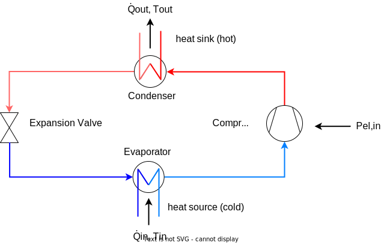
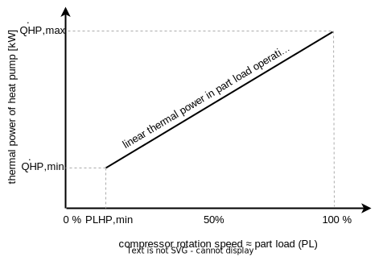
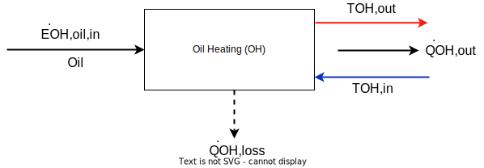
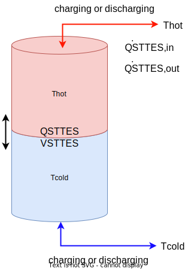
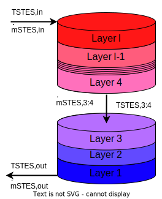
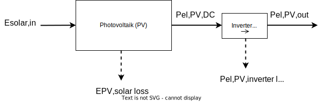
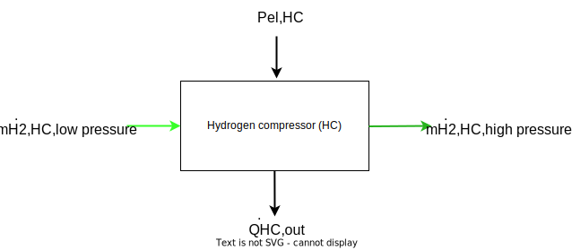

Technical description of main components
Heat pump (HP)
General description of HP
As heat pumps, electrically driven variable-speed and on-off compressor heat pumps can be integrated into the simulation model of Quasi. Their general system chart with the denotation of the in- and outputs is shown in the figure below.

The energy balance at the heat pump is built up from the incoming electricity , the incoming heat at a low temperature level and the outgoing heat flow at a higher temperature level .
The energy balance of the heat pump model is shown in the following figure:

The efficiency of the heat pump is defined by the coefficient of performance (COP). The COP determines the electrical power required to raise the temperature of a mass flow from the lower temperature level to :
The COP is always smaller than the maximum possible Carnot coefficient of performance (), which is calculated from the condenser outlet and evaporator inlet temperature. The maximum possible COP calculated by Carnot is reduced by the carnot effiency factor , which is according to [Arpagaus2018]2 around 45 % for high temperature heat pumps and around 40 % for conventional heat pumps.
The energy balance (or power balance) of the heat pump can be drawn up on the basis of the latter figure and on the ratio between supplied and dissipated heat power, expressed as the COP:
The power of the heat pump's electric supply, including the losses of the power electronics, is given as:
Since the temperatures of the heat flows entering and leaving the heat pump, which have not been considered so far, may also be relevant for connected energy systems, the heat outputs can be calculated on the basis of the respective mass flow and the physical properties of the heat transfer medium (specific heat capacity and, if applicable, the density ) by rearranging the following equation:
Modelling approaches for HP: Overview
According to [Blervaque2015]1, four different categories are described in the literature when it comes to the simulation of heat pumps:
- quasi-static empirical models: equation-fit models based on discretised manufacturer or certification data fitted to polynomes, used for example in EnergyPlus or TRNSYS
- dynamic empirical models: equasion-fit models extended by continious transient effects
- detailed physical models: thermodynamic approach based on dynamic and refrigerant flow modelling, many parameters required
- simplified physical models or parameter-estimation models: based on physical model, but with less input parameter needed due to internal assumptions
For the simulation of energy systems in an early design phase, for which Quasi is intended, only quasi-static or dynamic empirical models can be considered due to the lack of detailed information about the technical components used and the computational effort required for physical models. Therefore, an empirical model based on manufacturer data or certification process data is implemented in Quasi.
There are several aspects to be considered when simulating a heat pump based on equation-fitting, which will be briefly described in the following:
The COP of a heat pump, representing the efficiency in a current time step, depends highly on the temperature of the source and the requested temperature of the heat demand. Generally speaking, the efficiency and thus the COP decreases with larger temperature differences between source and sink.
Additionaly, the maximum thermal power of the heat pump is not constant for different operation temperatures. The available thermal power is decreasing with lower source temperature, an effect that mainly occurs in heat pumps with air as the source medium. The rated power given for a specific heat pump is only valid for a specified combination of sink and source temperature. The specification for the declaration of the rated power is described in DIN EN 145113.
Furthermore, the efficiency and therefor the COP is changing in part load operation. In the past, mostly on-off heat pump where used, regulating the total power output in a given time span by alternating the current state beween on and off. This causes efficency losses mostly due to thermal capacity effects and initial compression power needed at each start. (ToDo: Socal2021) In the last years, modulating heat pumps are more common, using a frequency inverter to adjust the speed of the compression motor and therefor affecting the power output. Interestingly, this method leads to an efficiency increase in part load operation with a peak in efficiency at around 30 to 60 % of the nominal power output. In the literature, many research groups have investigated this effect, compare for excample to Bettanini20034, Toffanin20195, Torregrosa-Jaime20086, Fuentes20197, Blervaque20151 or Fahlen20128.
For a most realistic representation, all three discussed effects need to be considered - temperature-dependent COP, temperature-dependent power and part-load-dependent COP. The calulation of these dependencies will be described below.
Modelling approaches for HP: Detail
Temperature-dependent COP
The temperature-dependend COP can be calculated from different methods:
- using the with the carnot effiency factor as explained above (easy, simple and fast, but unreal high efficiency with small temperature differences of source and sink)
- looking up the COP in a look-up table in dependence of the condenser outlet and the evaporator inlet temperature (for computational efficienc, lookup-tables are fitted to polynomes in pre-processing)
- COP calculated as fraction of temperature-dependend electrical and thermal power, gained from generally developed polynomes. Here, the temperature-depended variation of the maximal power output of the heat pump can be directly taken into account.
As example for a lookup-table COP (second bulletpoint above), the following figure from Steinacker202215 shows a map of a high-temperature heat pump as a set of curves, depending on the evaporator inlet and condenser outlet temperature. In three dimensions, this figure would result in a surface that can be parameterized with a three-dimensional spline interpolation algorithm.
 ToDO: translate to english
ToDO: translate to english
Maximum thermal and electrical power
In order to adress a change in maximum power output or input of the heat pump at different operating temperatures, two different approaches can be used.
The more complex but also more accurate approache is the use of polynomial fits of temperature-dependend thermal and electrical power. These polynomes depend on the condenser outlet and the evaporator inlet temperature and they need to be calculated from manufacturer data or from measurements.
In order to adress the early planning stage, general, market-averaged polynomes need to be created, representing an average heat pump. Aditionally, one specific heat pump model can be used if the the required data is available.
ToDo: Add method of calculating market-averaged polynomes!
Biquadratic polynomes according to TRNSYS Type 401
where all temeratures have to be normed according to
The second method to adjust the electrical and thermal energy would be a linear gradient that adjust the rated power in dependency of one temperature. Checking the available data of many different heat pumps from Stiebel-Eltron9, a simplified correlation can be observed:
- the thermal power is dependend on the source temperature, but independent on the sink temperature (the lower the source temperature the lower is the heating power)
- the electrical power is dependend on the sink temperature, but independent on the source temperature (the higher the sink temperature the higher is the electrical power consumption)
This gives the possibility to linearly adjust the available thermal power with the change of the source temperature and the electrical power demand with the change of the temperature of the sink. Which power needs to be adjusted depends on the choice of the control strategy - thermally or electrically controlled. The gradient of the power de- or increase with changing temperature needs to be specified.
Part load efficiency
The COP of the modeled heat pump depends not only on the temperatures of the sink and the source but also on the current part load ratio (PLR). The relation of the COP and the PLR is assumed to be non-linear. The COP can be corrected using a non-linear part load factor (PLF) in dependence of the PLR.
Part load ratio (PLR) = power (el. or th.) demand or availability in current time step in relation to maximum power (el. or th.) with current temperatures:
Part load facor (PLF) = adjustment factor for COP at different PLR:
It follows from the definition of the COP that the correlation between the electrical power consumption and the heat output of the heat pump in part load operation is therefore not linear too. For simplification, the heat output of the heat pump itself is assumed to linear in part load operation between at and at 100% compressor speed as shown in the figure below.

The coefficient of performance in partial load operation is approximated using a correction function. The literature provides different examples for the quadratic part-load behaviour of the COP (see section "Overview" for literature examples). As an example, the part-load-dependend COP of an ENRGI-Heatpump is shown in the following figure (Source: Enrgi10)

The part-load behaviour depends also on the type of the heat pump (on-off or inverter heat pump), as shown for example in Bettanini20034 or in Socal202111. For illustration, the following figure is taken from the latter reference to demonstrate the different part load factors of the COP (y-axis) at different part load ratios for different heat pump technologies:

Taking the correction factor curve from the figure above for inverter heat pumps, the maximum part load factor is reached at 50 % part load with an increase of the COP of 1.1. Contrary, in Toffanin20195, the part load factor is assumed to be much higher, reaching its maximum at 25 % part load ratio with a part load factor of 2.1. These discrepancies illustrate the wide range of literature data and the difficulty in finding a general part load curve.
The figure above shows also the difference of the part load factor comparing on-off and inverter heat pumps as well as the defined on-off losses in DIN EN 14825 for the calculation of the seasonal coefficient of performance (SCOP).
ToDo: Description of method of PLF-Factor curcve in Quasi II: Using Blervaque2015?
Steps to perform in the simulation model of the heat pump
The calculation is based on TRNSYS Type 40112 that is similar to Type 20413. The cycling losses of the heat pump in both TRNSYS models are calculated using an exponential function to describe the thermal capacity effecs during heat-up and cool-down. Here, these cycling losses will only be used during start and stop of the heat pump - actual cycling losses from on-off heatpumps will be considered separately in the process to allow the consideration of modulating heat pumps as well.
Steps to calculate the electrical and thermal energy in- and outputs of HP:
- using polynomial fits to calculate stationary thermal and electrical full-load power at given temperatures of and for given nominal thermal power
- differing source and sink medium:
- air-water
- water-water
- sole-water
- differing temperature range:
- normale heat pump
- high-temperature heat pump
- polynomial fits have to be normalized to rated power at specified temperatures! Rated power has to be related always to the same temperature lift according to DIN EN 14511 --> different fits for normal (B10/W35, W10/W35, A10/W35) and high temperture (B35/W85, W35/W85) heat pumps
- differing source and sink medium:
- reduce thermal power output due to transient capacity effects during start-up as average over current time step
- calculate COP at full load with calculated thermal and electrical power
- get demand of thermal or electrical energy
- differing if thermal or electric energy related operation strategy is chosen
- calculate part load ratio (PLR) with current demand and temperature-dependend full-load power
- get part load factor (PLF) from coeffcicient curve using the PLR to adjust full-load COP
- differing: modulating (intverter) or on-off heat pump
- calculate part-load COP using full-load COP and PLF
- may adjust part-load COP by icing losses (air-water, air-air)
- calculate the unknown power (either electrical or thermal) with adjusted part-load COP and known power
Contraty to the TRNSYS Type 401, the mass flow here is variable and not constant within two timesteps, therefore the and can be calculated directly without the need of iteration as implemented in Type 401. Here, the is a fixed, user-specified value in the presented simplified model.
The polynomes describing the temperature-depended thermal and electrical power of the heat pump need to be normalized to the power consumption at the rated operation point. Therefore, the following steps are necessary:
- fit data to polynome for thermal and electrical energy
- calculate power at specified nominal temperatures with generated fitted polynome
- normalize polynome to calculated rated power at specific temperature using a fraction_factor
If universal data table or the Carnot-COP reduced by an efficiency factor should be used instead of the more accurate model described above, a different calculation approach is needed:
- Get power at current temperatures
- using nominal power without a temperature-dependency or
- using polynomial fits to calculate stationary thermal or electrical full-load power at given temperatures of and , depending on control strategy (see above)
- get stationary full-load COP at given temperatures of and either from
- COP data table (fitted to polynome in pre-calculation) or
- Carnot-COP reduced by an efficiency factor
- determine the unknown, non-controlled full load power (electrial or thermal) with known, controlled power and COP
- get demand of controlled energy (thermal or electrical)
- differing if thermal or electric energy related operation strategy is chosen
- calculate part load ratio (PLR) with current demand and temperature-dependend full-load power
- get part load factor (PLF) from coeffcicient curve using the PLR to adjust full-load COP
- differing: modulating (intverter) or on-off heat pump
- calculate part-load COP using full-load COP and PLF
- may adjust part-load COP by icing losses (air-water, air-air)
- calculate the non-controlled (either electrical or thermal) power with adjusted part-load COP and the controlled power
Inputs und Outputs of the Heat Pump:
| Symbol | Description | Unit |
|---|---|---|
| heat flow supplied to the HP (heat source) | [MW] | |
| heat flow leaving the HP (heat sink) | [MW] | |
| electric power demand of the HP | [MW] | |
| electric power demand of the HP incl. losses of the power electronics | [MW] | |
| condenser inlet temperature | [°C] | |
| condenser outlet temperature | [°C] | |
| evaporator inlet temperature | [°C] | |
| evaporator outlet temperature | [°C] |
Parameter of the Heat Pump: ToDO
| Symbol | Description | Unit |
|---|---|---|
| maximum thermal power of the heat pump | [MW] | |
| minimum thermal power of the heat pump at | [MW] | |
| minimum possible part load of the heat pump [%] | ||
| coefficient of performance (COP) of the heat pump incl. thermal losses depending on and and on current state | [-] | |
| efficiency of power electronics of heat pump | [-] | |
| efficiency factor of heat pump, reduces the Carnot-COP | [-] | |
| minimum operating time of heat pump | [min] | |
| start-up time of the HP until full heat supply (linear curve) | [min] |
State Variables of Heat Pump:
| Symbol | Description | Unit |
|---|---|---|
| current operating state (on, off, part load) | [%] |
Electrolyser
The electrolyzer uses electrical energy to split water into its components hydrogen () and oxygen () as shown in the following reaction equation:
If the electrical energy is provided by renewable energies, the resulting hydrogen is labeled as "green hydrogen" and can be used to decarbonize the mobility or industrial sector or fed into the natural gas grid. The waste heat generated in the process can be used directly by feeding it into a heat network or via an intermediate heat pump. For flexible operation, it is possible to discharge the waste heat to the environment using a chiller. The use of waste heat is an important factor for the overall efficiency of the electrolyzer.
The general energy and mass flow in the electrolyser as well as the losses considered in the model can be seen in the following figure.
Fig. 5: Energy and mass flows in the electrolyser

The relationship between supplied hydrogen of the electrolysis (energy () or mass flow ()) and the consumption of electrical energy () is given in the following equation, where can be either the net or the gross calorific value of the hydrogen:
Due to the purification losses of the hydrogen caused by the reduction of oxygen molecules contained in the hydrogen gas in the catalyst, depending on the electrolysis technology, the actually obtained hydrogen energy or mass flow is reduced by the proportion of the hydrogen losses to the energy or mass flows, supplemented with index :
Conversely, by rearranging and substituting the previous equations from a required hydrogen mass flow, the electrical power consumption can be calculated as follows:
The usable waste heat from the electrolysis process is determined, depending on the available information, as
With a known mass flow and the specific heat capacity of the heat transfer medium of the heat recovery as well as a known inlet temperature , the outlet temperature of the heat transfer medium from the cooling circuit can be determined by rearranging the following equation:
The heat loss , which cannot be used and is dissipated to the environment via heat transport mechanisms, is calculated as follows
The actual needed power supply of the electrolyzer increases by losses in the power electronics and results from the electrical reference power and the losses in the power electronics to
Since the oxygen produced during the electrolysis process can also be utilized economically under certain circumstances, the resulting oxygen mass flow is determined from the stoichiometric ratio of the reaction equation of the water splitting described at the beginning:
The required mass flow of water can be determined from the supplied masses of hydrogen and oxygen and the purification losses in the water treatment unit, characterized by the fraction of purification losses .
Assumption: The electrolyzer is only operated between minimum 0 % and maximum 100 % load. A specification of power above nominal power, which frequently occurs in practice, is not supported.
TODO: Efficiency decrease (el.) due to degradation?
Inputs and Outputs of the Electrolyser:
| Symbol | Description | Unit |
|---|---|---|
| electrical power requirement of the electrolyser | [MW] | |
| electrical power requirement of the electrolyser incl. losses of power electronics | [MW] | |
| water mass flow fed to the electrolyser | [kg/h] | |
| oxygen mass flow delivered by the electrolyser | [kg/h] | |
| hydrogen mass flow produced by the electrolyser (before -cleaning losses) | [kg/h] | |
| hydrogen mass flow provided by the electrolyser (after -cleaning losses) | [kg/h] | |
| hydrogen energy flow discharged from the electrolyser (before -cleaning losses) | [MW] | |
| hydrogen energy flow provided by the electrolyser -cleaning losses) | [MW] | |
| cooling fluid inlet temperature of electrolyser | [°C] | |
| cooling fluid outlet temperature of electrolyser | [°C] | |
| waste heat provided by the electrolyser | [MW] | |
| thermal losses in elektrolyser (unused waste heat)) | [MW] |
Parameter of the Electrolyser:
| Symbol | Description | Unit |
|---|---|---|
| electric power consumption of the electrolyser under full load (operating state 100 %) | [MW] | |
| efficiency of hydrogen production of the electrolyser ( related to as a function of operating state, plant size and plant type) | [-] | |
| efficiency of the usable heat extraction of the electrolyzer (related to ) | [-] | |
| efficiency of the power electronics of the electrolyser | [-] | |
| minimum allowed partial load of the electrolyzer | [-] | |
| minimum operating time of the electrolyser | [min] | |
| start-up time of the electrolyser until full heat supply (linear curve) | [min] | |
| mass-dependent energy of hydrogen (net calorific value or gross calorific value) | ||
| stoichiometric mass-based ratio of oxygen and hydrogen supply during electrolysis | [kg / kg ] | |
| percentage of purification losses in hydrogen purification | [%] | |
| percentage of purification losses in water treatment | [%] | |
| pressure of hydrogen supply | [bar] | |
| pressure of oxygen supply | [bar] | |
| max. allowed temperature of cooling medium input | [°C] |
State variables of the Electrolyser:
| Symbol | Description | Unit |
|---|---|---|
| current operating state (on, off, part load) | [%] |
Reduction of usable heat during start-up

Linear warm-up during start-up:
Combined heat and power plant (CHP)

Definiton of power-to-heat ratio of CHP:
Energy balance on CHP:
Calculation of electric power output:
Calculation of thermal power output:
Calculation of thermal losses in CHP:
Relation of electric and thermal power output:
TODO: Part load efficiency reduction?
Inputs and Outputs of the CHP:
| Symbol | Description | Unit |
|---|---|---|
| electric power output of the CHP | [MW] | |
| electric power provided by the CHP | [MW] | |
| thermal power output of the CHP | [MW] | |
| energy demand of the CHP, natural or green gas (NCV or GCV) | [MW] | |
| thermal energy losses of the CHP | [MW] |
Parameter of the CHP:
| Symbol | Description | Unit |
|---|---|---|
| rated electric power output of the CHP under full load (operating state 100 %) | [MW] | |
| rated thermal power output of the CHP under full load (operating state 100 %) | [MW] | |
| thermal efficiency of CHP (regading NCV or GCV, needs to correspond to ) | [-] | |
| electrical efficiency of CHP, including selfe-use of electrical energy (regading NCV or GCV, needs to correspond to ) | [-] | |
| power-to-heat ratio of CHP | [-] | |
| minimum allowed partial load of the CHP | [-] | |
| minimum operating time of the CHP | [min] | |
| start-up time of the CHP until full heat supply (linear curve) | [min] |
State variables of the CHP:
| Symbol | Description | Unit |
|---|---|---|
| current operating state of the CHP (on, off, part load) | [%] |
Gas boiler (GB)

Energy balance of gas boilder:
TODO: Part load efficiency reduction?
Inputs and Outputs of the GB:
| Symbol | Description | Unit |
|---|---|---|
| thermal power output of the GB | [MW] | |
| energy demand of the GB, natural or green gas (NCV or GCV) | [MW] | |
| thermal losses of the GB | [MW] |
Parameter of the GB:
| Symbol | Description | Unit |
|---|---|---|
| rated thermal power output of the GB under full load (operating state 100 %) | [MW] | |
| thermal efficiency of gas boiler (regading NCV or GCV, needs to correspond to ) | [-] | |
| minimum allowed partial load of the GB | [-] | |
| minimum operating time of the GB | [min] | |
| start-up time of the GB until full heat supply (linear curve) | [min] |
State variables of the GB:
| Symbol | Description | Unit |
|---|---|---|
| current operating state of the GB (on, off, part load) | [%] |
Oil heating (OH)

Elecric heating rod (ER)

Biomass boiler (BB)

Heat sources
Soil
- geothermal probes
- geothermal collector
- ...
Regernation von Wärmequellen --> Erdwärmesonden sind eher Speicher als Wärmequellen
Water
- groundwater well
- surface waters
- waste heat from industrial processes
- wastewater
- solar thermal collector
Air
- ambient air
- exhaust air
- hot air absorber
External source
- district heating network
(Vergleich FutureHeatPump II Projekt)
Chiller (CH)
Simple model for electrolyser
General model for cooling purposes
or just one general model?
Short-term thermal energy storage (STTES)


The short-term energy storage is a simplified model without thermal losses to the ambient. It consists of two adiabatically separated temperature layers, represented as an ideally layered storage without any interaction between the two layers. This model was chosen to keep the computational effort as small as possible. If a more complex model is needed, the seasonal thermal energy storage can be used that is including energy and exergetic losses.
The rated thermal energy content of the STTES can be calculated using the volume , the density , the specific thermal capacity of the medium in the storage and the temperature span within the STTES:
The amount of the total input () and output energy () in every timestep is defined as and
The current charging state can be calculated using the following equation and the charging state of the previous timestep () as well as the input and output energy
leading to the total energy content in every timestep as
The limits of the thermal power in- and output ( and ) due to the current energy content and maximum c-rate of the STTES are given as
Inputs and Outputs of the STTES:
| Symbol | Description | Unit |
|---|---|---|
| thermal power input in the STTES | [MW] | |
| thermal power output of the STTES | [MW] | |
| current mass flow rate into the STTES | [kg/h] | |
| current mass flow rate out of the STTES | [kg/h] |
Parameter of the STTES:
| Symbol | Description | Unit |
|---|---|---|
| maximum charging rate (C-rate) of STTES | [1/h] | |
| maximum discharging rate (C-rate) of STTES | [1/h] | |
| rated thermal energy capacity of the STTES | [MWh] | |
| thermal energy contend of the STTES at the beginning of the simulation in relation to | [%] | |
| volume of the STTES | [m] | |
| densitiy of the heat carrier medium in the STTES | [kg/m] | |
| specifiy heat capacity of the heat carrier medium in the STTES | [kJ/(kg K)] | |
| rated upper temperature of the STTES | [°C] | |
| rated lower temperature of the STTES | [°C] |
State variables of the STTES:
| Symbol | Description | Unit |
|---|---|---|
| current amount of thermal energy stored in the STTES | [MWh] | |
| current charging state of the STTES | [%] |
Seasonal thermal energy storage (STES)
Seasonal thermal energy storages can be used to shift thermal energy from the summer to the heating period in the winter. Due to the long storage period, energy losses to the environment and exergy losses within the storage must be taken into account.
Tank (TTES) and Pit (PTES) thermal energy storage
Neglected: Thermal capacity of the surrounding soil, gravel-water storages
Generalized geometry for TTES and PTES
 Figure and method of generalized geometry definition based on [Steinacker2022]15.
Figure and method of generalized geometry definition based on [Steinacker2022]15.
Ratio between height and mean radius of the STES:
Upper radius of the STES in dependence of the Volume and : Lower radius of the STES in dependence of the upper radius :
Slope angle has to be in the range of to ensure the shape of a zylinder, a cone or a truncated cone. Analogously, the ratio beween the height and the mean radius of the STES has to be smaller as
The heigt of the STES can be calculated as resulting with the number of layers into the thickness of each layer
Lateral surface of each layer with heigt , upper radius and lower radius of each layer:
Volume of each layer:
Thermal model for stratisfied storage

General energy balance in every timestep :
 Figure adapted from [Steinacker2022]15.
Figure adapted from [Steinacker2022]15.
Stratisfied storage model based on [Lago2019]14 and modified to account for cones according to [Steinacker2022]15 and for half-burried storages.
Three different energy or exergy loss mechanisms are taken into account as shown in the figure above:
- Energy losses to the environment through the outer walls (bottom, walls and lid) of each storage layer (), characterized by the heat transfer coefficient of the outer surfaces
- Exergy losses due to diffusion processes between the storage layers , specified by the diffusion coefficient
- Exergy losses due to convection (buoyancy) between the storage layers .
The temperature in layer with height is given by the partial differential equation
The ambient temperature of each layer can be either the ambient air temperature in the specific time step or the ground temperature depending on the considered layer and the number of layer burried under the ground surface.
Using the explicite Euler method for integration, the previous equation leads to the temperature in every timestep and layer with respect to the temperatures in the timestep bevore and the layers around (without the index for better overview)
As the coefficients mentioned above are constant within the simulation time, they can be precomputed for cumputational efficiency.
To illustrate the principle of the implemented model, the following figure shows the mass flow into and out of the STES as well as examplary for one transition between two layers the mass flow between the layers within the model. The corresponding temperatures are the temperatures of the source (input flow or layer temperature of the previous layer). As a convention, the lowermost layer is labeled with the number 1. The inflow and outflow is always in the top and bottom layers. For correct results, the inegrated mass flow within one timestep has to be smaller than the volume of the smallest layer element of the storage (ToDo: Maybe fix this issue in Quasi II?)

To account for buoyancy effects, a check is made in each time step to determine whether the temperature gradient in the reservoir corresponds to the physically logical state, meaning that the temperatures in the upper layers are higher than in the lower storage layers. If, however, an inverse temperature gradient is present, a mixing process is performed in each time step for all layers, beginning with : using the volume-ratio of each layer with respect to the surrounding layers, inspired by [Lago2019]14:
This method was extensively tested in [Steinacker2022]15 and compared to calculations performed with TRNSYS Type 142 with high agreement. Is was shown that an optimal number of layers for this model is 25, considering computational efficiency and quality of the results.
Inputs and Outputs of the STES:
| Symbol | Description | Unit |
|---|---|---|
| thermal power input in the STES | [MW] | |
| thermal power output of the STES | [MW] | |
| current mass flow rate into the STES | [kg/h] | |
| current mass flow rate out of the STES | [kg/h] | |
| temperature of input mass flow while loading the STES | [°C] | |
| temperature of output mass flow while loading the STES | [°C] | |
| temperature of input mass flow while unloading the STES | [°C] | |
| temperature of output mass flow while unloading the STES | [°C] |
Parameter of the STES:
| Symbol | Description | Unit |
|---|---|---|
| rated thermal energy capacity of the STES | [MWh] | |
| thermal energy contend of the STES at the beginning of the simulation in relation to | [%] | |
| rated upper temperature of the STES | [°C] | |
| rated lower temperature of the STES | [°C] | |
| maximum charging rate (C-rate) of STES | [1/h] | |
| maximum discharging rate (C-rate) of STES | [1/h] | |
| volume of the STES | [m] | |
| slope angle of the wall of the STES with respect to the horizon | [°] | |
| ratio between height and mean radius of the STES | [-] | |
| densitiy of the heat carrier medium in the STES | [kg/m] | |
| specific heat capacity of the heat carrier medium in the STES | [kJ/(kg K)] | |
| coefficient of diffusion of the heat carrier medium in the STES into itself | [m/s] | |
| heat transfer coefficient of the STES' lid | [W/m K] | |
| heat transfer coefficient of the STES' wall | [W/m K] | |
| heat transfer coefficient of the STES' bottom | [W/m K] | |
| number of thermal layer in the STES for the simulation | [pcs.] | |
| number of thermal layer of the STES above the ground surface | [pcs.] | |
| timeseries or constant of ground temperature | [°C] | |
| timeseries of ambient temperature | [°C] |
State variables of the STES:
| Symbol | Description | Unit |
|---|---|---|
| current amount of thermal energy stored in the STES | [MWh] | |
| current charging state of the STES | [%] | |
| vector of current temperatures in every layer of the STES | [°C] |
Borehole thermal energy storage (BTES)
Borehole thermal energy storages are not implemented yet.
Aquifer thermal energy storage (ATES)
Aquifer thermal energy storages are not implemented yet.
Ice storage (IS)
Hydrogen fuel cell (FC)

Photovoltaik (PV)

For the calculation of the electrical power output of photovoltaic systems, a separate simulation tool was developed and integrated into QuaSi. It is based on the Python extension pvlib17 and uses the model chain approach described in the pvlib documentation. Technical data of specific PV modules and DC-AC interverts are taken from the SAM model16 and integrated into pvlib.
Inputs can include orientation, tilt, ambient albedo, type of installation (e.g. roof-added, free-standing), as well as module interconnection and specific PV modules and inverters chosen from the library. Additional losses, such as ohmic losses in cables or losses due to soiling, can be taken into account. A weather input dataset is required that includes direct normal, global horizontal and diffuse horizontal irradiance as well as ambient (dry bulb) temperature, humidity and wind speed.
Wind power (WP)
windpowerlib
Achtung: Winddaten von EPW nicht geeignet!
Battery (BA)

Energy balance of battery in every timestep:
Self-Discharge losses of battery:
Charging losses of battery:
Discharging losses of battery:
Current maximum capacity of the battery:
Limits of electrical power in- and output (limit to current energy content and maximum c-rate of battery):
Relation beween current charging state in percent and in energy content:
Inputs and Outputs of the BA:
| Symbol | Description | Unit |
|---|---|---|
| electrical power input in the BA | [MW] | |
| electrical power output of the BA | [MW] | |
| electrical power losses of the BA due to self-discharging | [MW] | |
| electrical power losses of the BA while charging | [MW] | |
| electrical power losses of the BA while discharging | [MW] |
Parameter of the BA:
| Symbol | Description | Unit |
|---|---|---|
| charging efficiency of battery | [-] | |
| discharging efficiency of battery | [-] | |
| self-discharge rate of battery (% losses per hour regarding current energy content) | [1/h] | |
| maximum charging rate (C-rate) of battery | [1/h] | |
| maximum discharging rate (C-rate) of battery | [1/h] | |
| rated electrical energy capacity of the battery | [MWh] | |
| percentage of the reduction of the current battery capacity due to one full charge cycle | [%/cycle] | |
| electrical energy contend of the battery at the beginning of the simulation | [MWh] |
State variables of the BA:
| Symbol | Description | Unit |
|---|---|---|
| current amount of energy stored in the battery | [MWh] | |
| current maximum capacity of the battery depending on the number of charging cycles already performed | [MWh] | |
| current charging state of the battery | [%] |
Hydrogen compressor (HC)

ToDo
- In Tabelle Parameter nur Parameter, die auch eingegeben werden, alle anderen im Text einführen
- Definition einführen:
- Skalare: kursiv (normal math: )
- Vektor/Zeitreihe: Fett und kursiv (boldsymbol: )
- Matrix: Fett und nichtkursiv (textbf: )
References
-
Blervaque, H et al. (2015): Variable-speed air-to-air heat pump modelling approaches for building energy simulation and comparison with experimental data. Journal of Building Performance Simulation 9 (2), S. 210–225. doi: 10.1080/19401493.2015.1030862. ↩↩
-
Arpagaus C. et al. (2018): High temperature heat pumps: Market overview, state of the art, research status, refrigerants, and application potentials, Energy, doi: 10.1016/j.energy.2018.03.166 ↩
-
DIN EN 14511:2018 (2018): Air conditioner, liquid chiling packages and heat pumps for space heating and cooling and process chillers, with electrically driven compressors. DIN e.V., Beuth-Verlag, Berlin. ↩
-
Bettanini, E.; Gastaldello, A.; Schibuola, L. (2003): Simplified Models to Simulate Part Load Performance of Air Conditioning Equipments. Eighth International IBPSA Conference, Eindhoven, Netherlands, S. 107–114. ↩↩
-
Toffanin, R. et al. (2019): Development and Implementation of a Reversible Variable Speed Heat Pump Model for Model Predictive Control Strategies. Proceedings of the 16th IBPSA Conference, S. 1866–1873. ↩↩
-
Torregrosa-Jaime, B. et al. (2019): Modelling of a Variable Refrigerant Flow System in EnergyPlus for Building Energy Simulation in an Open Building Information Modelling Environment. Energies 12 (1), S. 22. doi: 10.3390/en12010022. ↩
-
Fuentes, E. et al. (2016): Improved characterization of water-to-water heat pumps part load performance. REHVA Journal, August 2016. ↩
-
Fahlén, Per (2012): Capacity control of heat pumps. REHVA Journal Oktober 2012, S. 28–31. ↩
-
Stiebel-Eltron Heat Pump Toolbox: https://www.stiebel-eltron.com/toolbox/waermepumpe/ ↩
-
https://enrgi.de/wp-content/uploads/2022/08/Datenblatt_ecoGEO_B-C_1-9kW.pdf ↩
-
Socal, Laurent (2021): Heat pumps: lost in standards, REHVA Journal August 2021. ↩
-
Wetter M., Afjei T.: TRNSYS Type 401 - Kompressionswärmepumpe inklusive Frost- und Taktverluste. Modellbeschreibung und Implementation in TRNSYS (1996). Zentralschweizerisches Technikum Luzern, Ingenieurschule HTL. URL: https://trnsys.de/static/05dea6f31c3fc32b8db8db01927509ce/ts_type_401_de.pdf ↩
-
Afjei T., Wetter M., Glass A. (1997): TRNSYS Type 204 - Dual-stage compressor heat pump including frost and cycl losses. Model description and implementation in TRNSYS, Versin 2. Zentralschweizerisches Technikum Luzern, Ingenieurschule HTL. URL: https://simulationresearch.lbl.gov/wetter/download/type204_hp.pdf ↩
-
Lago, J. et al. (2019): A 1-dimensional continuous and smooth model for thermally stratified storage tanks including mixing and buoyancy, Applied Energy 248, S. 640– 655: doi: 10.1016/j.apenergy.2019.04.139. ↩↩
-
Steinacker, H (2022): Entwicklung eines dynamischen Simulationsmodells zur Optimierung von wärmegekoppelten Wasserstoffkonzepten für die klimaneutrale Quartiersversorgung, unpublished master thesis, University of Stuttgart. ↩↩↩↩↩
-
System Advisor Model Version 2020.11.29 (SAM 2020.11.29). National Renewable Energy Laboratory. Golden, CO. URL: https://sam.nrel.gov ↩
-
Holmgren W. F., Hansen C. W. and Mikofski M. A. (2018): Pvlib Python: A python package for modeling solar energy systems, Journal of Open Source Software 3(29), 884, doi: https://doi.org/10.21105/joss.00884 ↩